radical meditation
Radical Meditation is an immersive performance that explores the relationship between mindfulness, power, and late-capitalist culture. Developed during an intensive residency at Marie Louise in Rotterdam, the work investigates the growing commodification of mindfulness and its transformation into a tool for productivity and self-optimization. Framed as a session by the fictional Radical Mindfulness Co.™, the performance adopts the aesthetics and language of corporate wellness to blur the boundaries between sincerity and satire, inviting participants to question where personal transformation ends and ideological conditioning begins.
Drawing from contemplative traditions, participatory performance, and social critique, Radical Meditation places audiences inside a carefully choreographed experience that unfolds through ritual, instruction, and collective participation. Rather than presenting a fixed narrative, the work creates a temporary community where humor, vulnerability, and critical reflection coexist. Premiered at Marie Louise in Rotterdam in 2024, the performance was later presented at THE END HAS NO END Festival at TimeWindow and at Eendracht Festival in 2025, continuing to evolve through each encounter with new audiences.
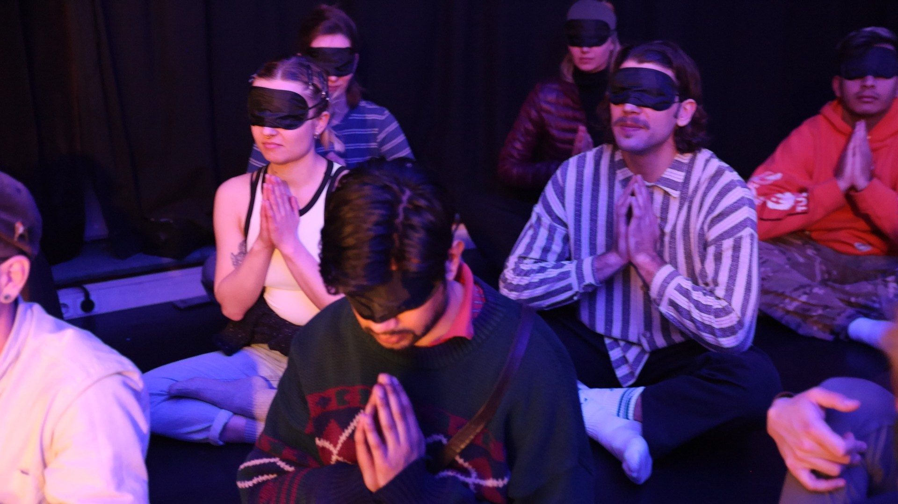
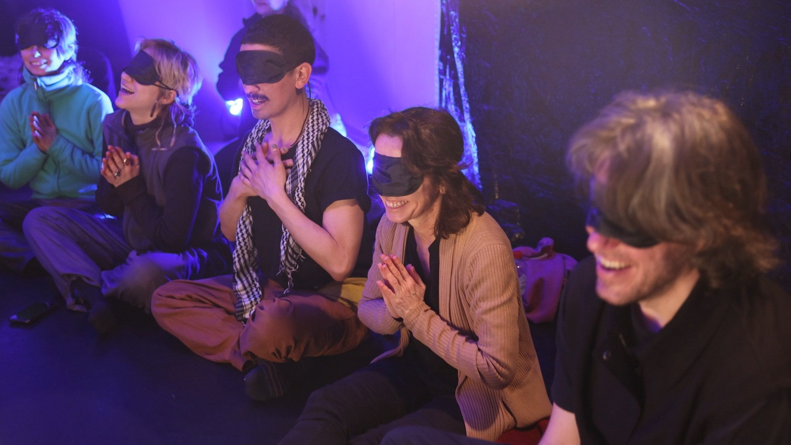
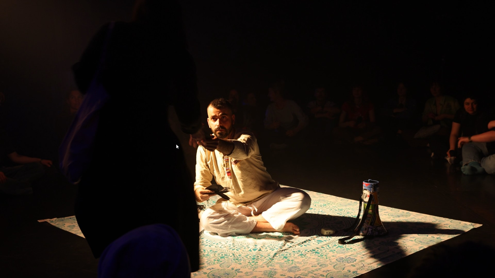
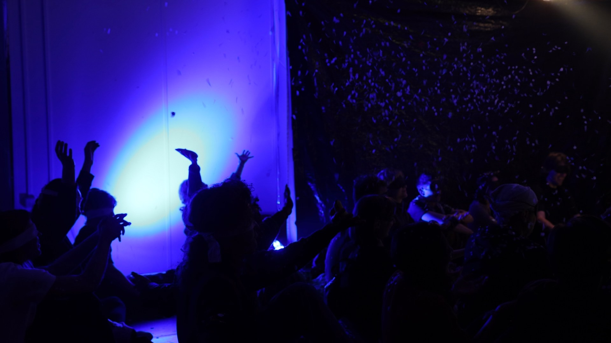
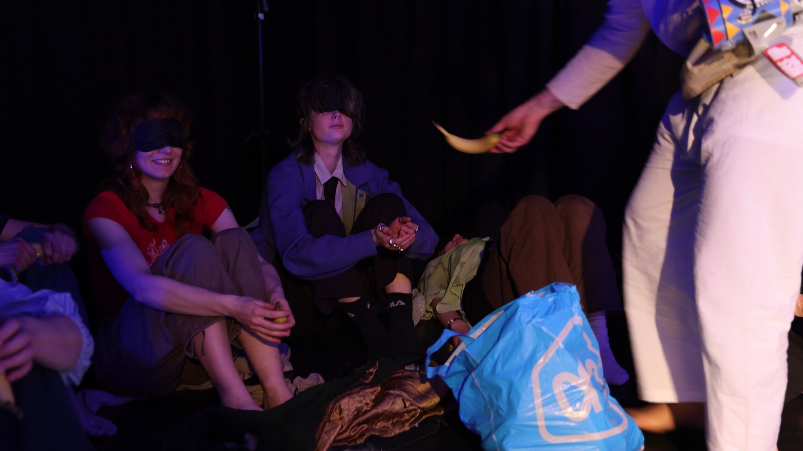
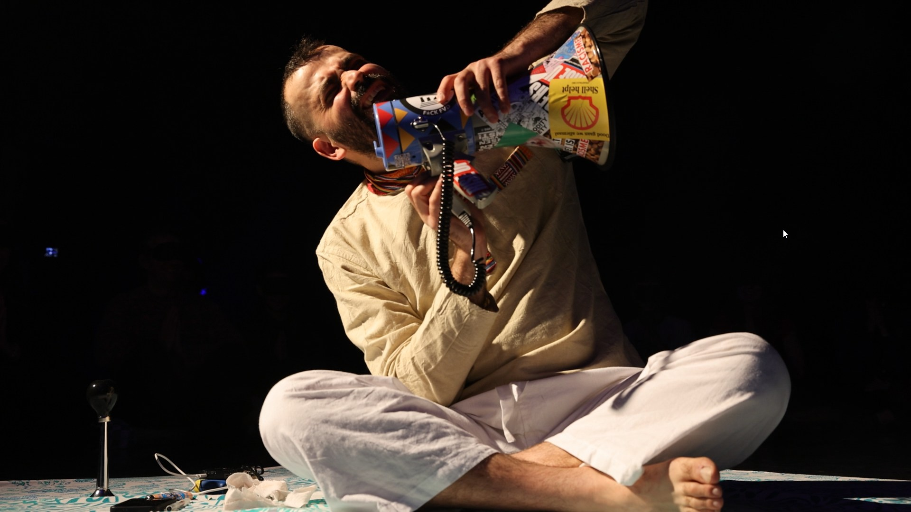
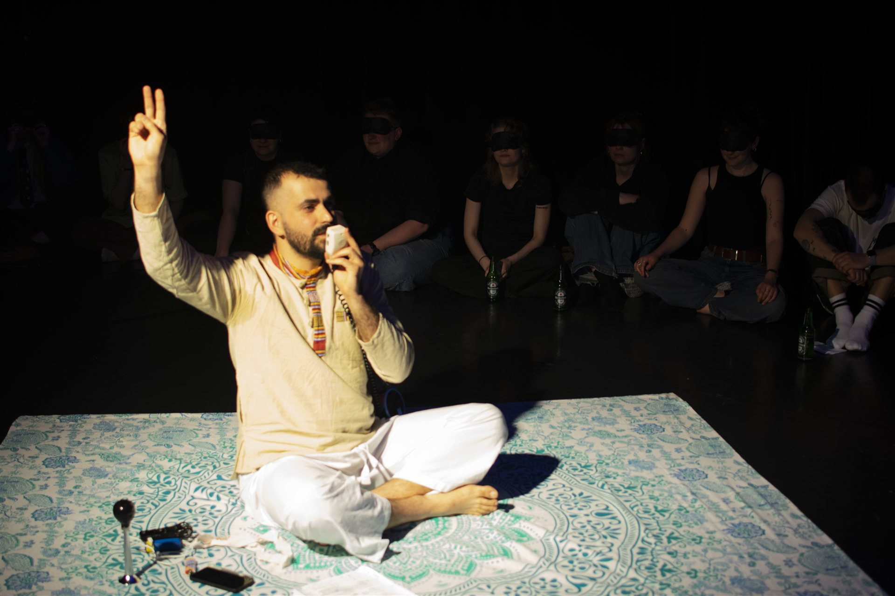
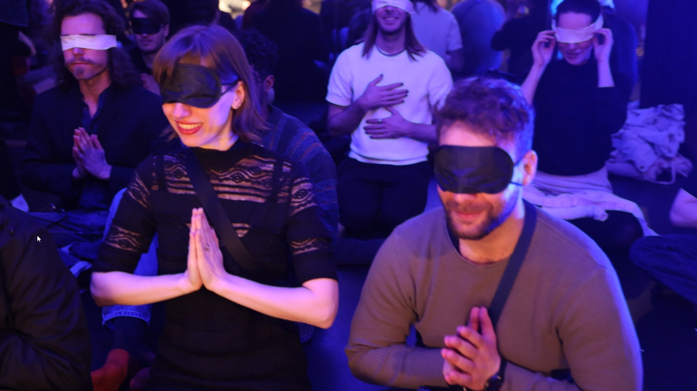
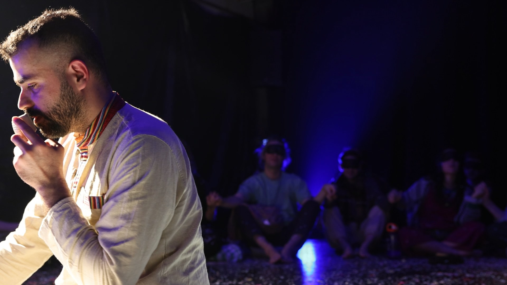
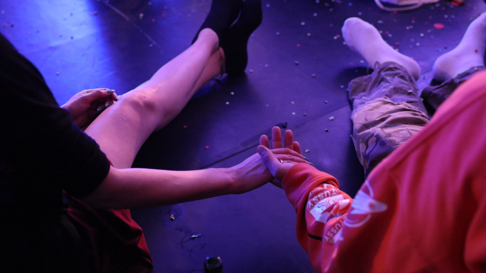
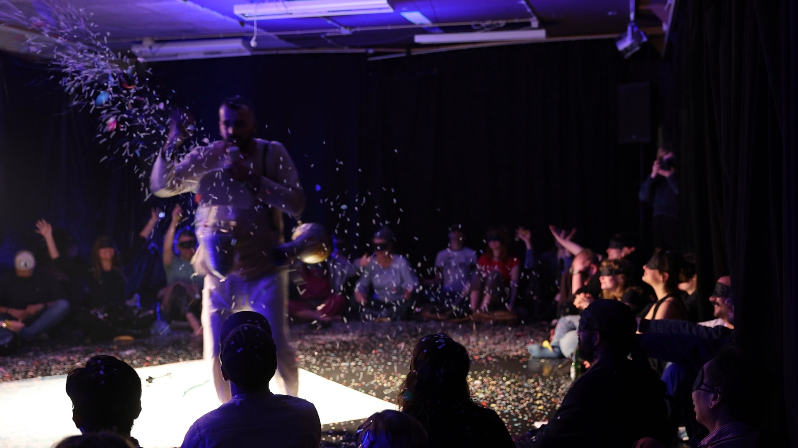
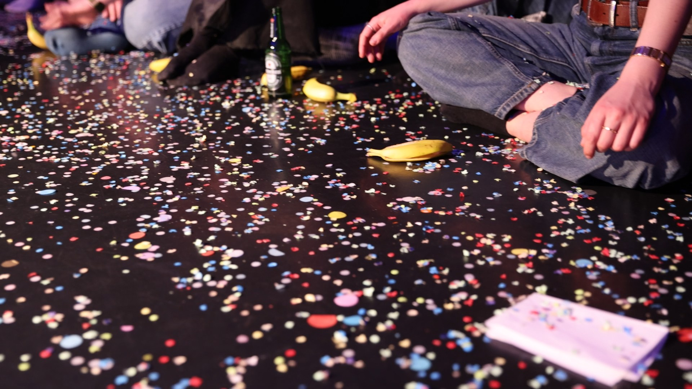
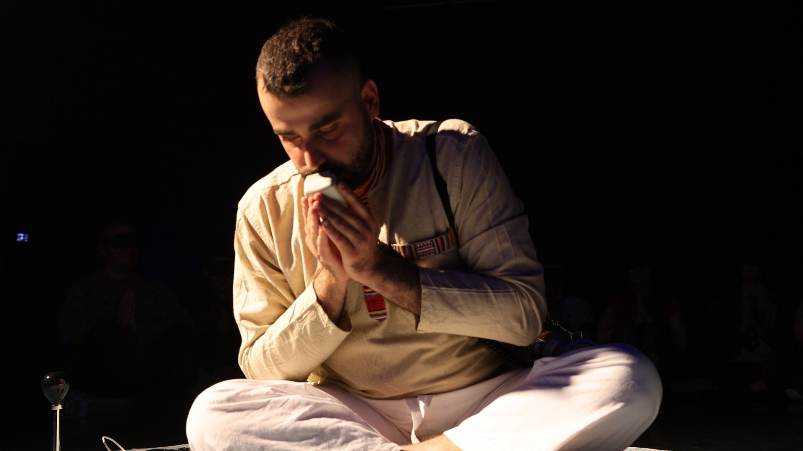